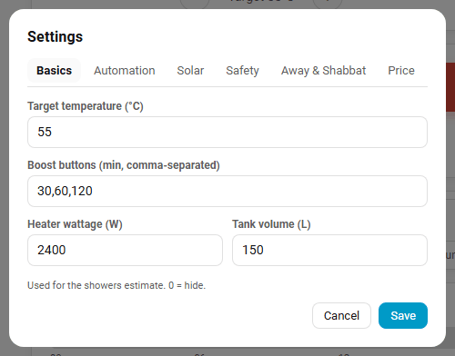
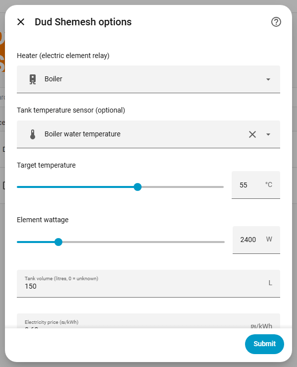

Configuration¶
Settings live in two places: the integration's Configure dialog in Home Assistant, and the Settings tab of the Dud Shemesh panel (the gear icon). Panel settings are for admins only. Everyday controls (mode, target temperature, heat now, vacation) work for every user.

Modes¶
| Mode | Behaviour |
|---|---|
| Auto | Pre-heats ahead of your comfort windows and also runs your schedules. Skips when the tank is already at target or the sun is doing the job. |
| Schedule | Runs your schedules at fixed times, skipping when the tank is already warm or the sun is heating it. This is the default for a new entry. |
| Off | No automatic heating. The boost buttons still work. |
Integration options (Configure dialog)¶

Heater, tank temperature sensor, target temperature, element wattage, tank volume, electricity price, comfort windows, mode, and the anti-Legionella cycle (on or off, temperature, interval in days). Comfort windows must be HH:MM-HH:MM ranges separated by commas; anything else is rejected.
Panel settings¶
Defaults below come from the code.
Basics¶
| Setting | Default | Notes |
|---|---|---|
| Target temperature | 55 °C | The drag marker on the gauge changes the same value (20 to 80 °C). |
| Boost buttons | 30,60,120 |
Minutes, comma-separated. The same durations appear as extend buttons while heating. |
| Heater wattage | 2400 W | |
| Base price | 0.62 ₪/kWh | |
| Tank volume | 0 (unknown) | Used for the showers estimate. 0 hides it. |
Automation¶
| Setting | Default | Notes |
|---|---|---|
| Hot water needed at | empty | Comfort windows for Auto mode. |
| Pre-heat margin | 5 min | Minutes before the window. |
| Calendar entity | none | Events whose title contains a keyword start a heat run. |
| Keywords | dud,water,חם,מים,דוד |
Put 45m (minutes) or 55c (target temperature) in the event description. Values are clamped to 1 to 720 min and 20 to 80 °C. |
| Look ahead | 10 min |
Solar¶
| Setting | Default | Notes |
|---|---|---|
| Weather entity | none | A weather.* entity. |
| Skip when state is | sunny |
Weather skip is never applied between sunset and sunrise (uses sun.sun). |
| Forecast hours | 0 | 0 = current weather state only. Otherwise the hourly forecast decides. |
| Max cloud cover | 40 % | Cloud cover still counted as sunny. |
| Solar forecast sensor | none | For example Forecast.Solar or Solcast. Skip when the value is at least the threshold (default 1.0). |
| Track window | 30 min | Solar gain detection watches the temperature rise over this window. |
| Rise threshold | 1.0 °C | Rise within the window that counts as the sun contributing. |
Safety¶
| Setting | Default | Notes |
|---|---|---|
| Auto-off after manual turn-on | 60 min | A heater switched on outside Dud Shemesh is adopted as a run and turned off after this time. 0 = off. |
| Maximum run length | 180 min | Also caps boost extensions. |
| Over-temperature cutoff | 75 °C | |
| Treat sensor as stale after | 120 min | 0 = never. A stale sensor is ignored and runs fall back to time only. |
| Fail detection | off | After N minutes (default 8) the tank must have risen by at least N °C (default 1.0), otherwise you get a heat-not-rising alert. |
| Anti-Legionella | off | Cycle temperature default 60 °C, every 7 days. |
Away and Shabbat¶
| Setting | Default | Notes |
|---|---|---|
| Vacation active until | none | Schedules and auto runs are suspended until that date. |
| Hold temperature | 30 °C | Keeps the tank from going fully cold (anti-mold). |
| Shabbat mode | off | Needs the Jewish Calendar integration. Heats before candle lighting. Options: Shabbat target (0 = normal target), lock the controls until havdalah, no notifications. |
Price¶
| Setting | Default | Notes |
|---|---|---|
| Time-of-use prices | none | Windows like 23:00-07:00@0.49. Other hours use the base price. |
| Move auto pre-heat to cheaper hours | on | Moves the pre-heat to the cheapest hours that still finish in time. |
Notifications¶
Pick one or more notify.* services and which events send a push:
heat_start, heat_end, target_reached, heat_not_rising, skipped_solar, skipped_weather, legionella_done, safety_stop, sensor_stale, manual_on, cold_warning.
Texts follow the Home Assistant language (English or Hebrew). Companion-app (mobile_app_*) notifications get action buttons: Heat now, Boost 1 h, Keep 30 min, Turn off.